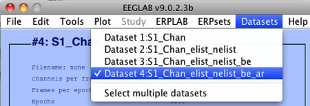

Note: A complete version of this script is available in Test_Data > Script_Examples > Script3b.m.
The script you made in the previous step is nice for processing the data from subject S1, but it would be a hassle to make it work for subject S2, because you'd have to change every instance of S1 to S2 in the script. In this example, you'll learn how to make the script more flexible so that it can easily work for other subjects.
First, you need to know about a little Matlab trick for combining different strings together. In our script, we'd like to be able to construct strings like 'S1_EEG.set' and 'S2_EEG.set'. That is, we want to combine 'S1' or 'S2' with '_EEG.set'. To see how this can be done in Matlab, type the following into the command line:
x = 'S1';
y = 'S2';
z = '_EEG.set';
You have now created 3 variables—x, y, and z. To see the value of a variable, you can just type the name of the variable at the command line (without a semicolon), like this:
>> x
x =
S1
Now we will create a new variable named filename that combines the x and z variables. To do this, type the following into the command line:
filename = [x z]
Make sure you do it without the semicolon at the end. When you do this, you've created the filename variable and given it a value that concatenates the values of the x and y variables. Because you did not put a semicolon at the end of the command, Matlab will print the value of the command in the command window, which should look something like this:
filename =
S1_EEG.set
You've now created a variable that contains the string 'S1_EEG.set'. It would be easy to change the variable to be 'S2_EEG.set' by typing filename = [y z]. Try this and verify that it gives you 'S2_EEG.set'. You can also do this by combining a string and a variable. For example, try typing filename = ['S3' z]. This should give you 'S3_EEG.set'.
Now that you've learned this little trick, let's apply it to the script you created in the previous step. Start by creating a new script file that is exactly like the previous one. Put the following two lines at the very top to define a variable named subject that will initially contain 'S1' and a variable named subjectfolder that contains the path to the subject's folder:
subject = 'S1';
subjectfolder = ['/Users/luck/Documents/Software_Development/ERPLAB_Toolbox/Test_Data/' subject '/']; [Note that you must replace this path with the appropriate path for your computer]
Note that there are spaces before and after subject in the second of these two lines — without these spaces, Matlab will not know that subject is separate from the strings that precede and follow it. If you are missing one or more of these spaces, you will get a (very unhelpful) message from Matlab saying "Error: Unexpected MATLAB expression".
In addition, you should keep in mind that there is nothing special about the variable names subject and subjectfolder—you could use qwerty or bobsyouruncle or anything else that is a legal Matlab variable name. But it's a very good idea to use meaningful variable names rather than things like x or qzzaz. Also, note that the first part of the subjectfolder definition should reflect the appropriate path for your computer (which you can see by typing pwd in the command window).
The next step is to go through the script and use our new Matlab trick to replace every occurrence of S1 with a set of square brackets containing subject or subjectfolder along with the rest of the string. For example, you should replace 'S1_EEG.set' with [subject '_EEG.set'] in the pop_loadset command, and you should replace 'S1_Chan' with [subject '_Chan'] in the pop_editset command. You should also follow each occurrence of 'filepath' with subjectfolder. The result will look like this (notice that the lines beginning with a percent sign are comments that I've inserted to explain the changes on the following line):
subject = 'S1';
subjectfolder = ['/Users/luck/Documents/Software_Development/ERPLAB_Toolbox/Test_Data/' subject '/'];
% 'S1_EEG.set' was replaced with [subject '_EEG.set'], and
% '/Users/luck/Documents/Software_Development/ERPLAB_Toolbox/Test_Data/S1/' was replaced with subjectfolder
EEG = pop_loadset('filename', [subject '_EEG.set'],'filepath', subjectfolder);
[ALLEEG, EEG, CURRENTSET] = eeg_store( ALLEEG, EEG, 0 );
EEG=pop_chanedit(EEG, 'lookup','/Users/luck/Documents/Software_Development/eeglab9_0_2_3b/plugins/dipfit2.2/standard_BESA/standard-10-5-cap385.elp');
[ALLEEG EEG] = eeg_store(ALLEEG, EEG, CURRENTSET);
% 'S1_Chan'was replaced with [subject '_Chan']
EEG = pop_editset(EEG, 'setname', [subject '_Chan']);
[ALLEEG EEG] = eeg_store(ALLEEG, EEG, CURRENTSET);
% 'S1_Chan.set'was replaced with [subject '_Chan.set'], and
% '/Users/luck/Documents/Software_Development/ERPLAB_Toolbox/Test_Data/S1/' was replaced with subjectfolder
EEG = pop_saveset( EEG, 'filename', [subject '_Chan.set'],'filepath', subjectfolder);
[ALLEEG EEG] = eeg_store(ALLEEG, EEG, CURRENTSET);
EEG = pop_creabasiceventlist(EEG, 'Newboundary', {-99}, 'Stringboundary', { 'boundary' }, 'Warning', 'on');
[ALLEEG EEG CURRENTSET] = pop_newset(ALLEEG, EEG, 1,'gui','off');
% '/Users/luck/Documents/Software_Development/ERPLAB_Toolbox/Test_Data/S1/binlister_demo_1.txt'
% was replaced with [subjectfolder 'binlister_demo_1.txt']
EEG = pop_binlister( EEG , 'BDF', [subjectfolder 'binlister_demo_1.txt'], 'ImportEL', 'no', 'Saveas', 'on', 'SendEL2', 'EEG', 'Warning', 'on' );
[ALLEEG EEG] = eeg_store(ALLEEG, EEG, CURRENTSET);
EEG = pop_epochbin( EEG , [-200.0 800.0], 'pre');
[ALLEEG EEG CURRENTSET] = pop_newset(ALLEEG, EEG, 3,'gui','off');
EEG = pop_artmwppth( EEG , 'Channel', 1:16, 'Flag', 1, 'Threshold', 100, 'Twindow', [ -200 798], 'Windowsize', 200, 'Windowstep', 50 );
[ALLEEG EEG CURRENTSET] = pop_newset(ALLEEG, EEG, 4,'gui','off');
ERP = pop_averager( ALLEEG , 'Criterion', 1, 'DSindex',4, 'Stdev', 'on');
% 'S1_ERP'was replaced with [subject '_ERP'], and
% '/Users/luck/Documents/Software_Development/ERPLAB_Toolbox/Test_Data/S1/S1_ERP.erp'
% was replaced with [subjectfolder subject '_ERP.erp']
ERP = pop_savemyerp(ERP, 'erpname', 'S1_ERP', 'filename', [subject '_ERP.erp'], 'pathname', subjectfolder, 'warning', 'on');
eeglab redraw;
Once you've made all of these changes, try running the script. But first, exit EEGLAB, type clear all in the command window, and launch EEGLAB again (the next sections will explain how you can avoid the need for this, although it's often a good idea). Then run your script.
Unless you were incredibly careful, you probably made at least one error when making all of these changes. For example, if you didn't leave a space between subject and '_Chan' in the pop_editset command, you would get an error message like this:
??? Error: File: Script3b.m Line: 17 Column: 44
The input character is not valid in MATLAB statements or expressions.
Similarly, if you did not put the correct path for the Test_Data folder in the subjectfolder variable, you will get a message like this:
??? Error using ==> load Unable to read file /Users/luck/Documents/Software_Development/ERPLAB_Toolbox2/Test_Data/S1/S1_EEG.set: No such file or directory. Error in ==> pop_loadset at 107 TMPVAR = load(filename, '-mat'); Error in ==> Script3b at 10 EEG = pop_loadset('filename', [subject '_EEG.set'],'filepath', subjectfolder);
You will doubtless find this aggravating and frustrating. I'm not sure if you will find this comforting, but for most scripts you will probably spend more time tracking down and fixing problems than you will spend actually writing the initial script. That has always been my experience, and it's also true for professional programmers. Click here for some tips on debugging.
Once you get your script running, you are almost ready to try it on subject S2. But there are two more little things that we need to fix to get the script to work for another subject. The first is that, when you do all the processing steps in the GUI and then average the data, you tell the averaging command which dataset(s) to average by specifying the dataset number within the Datasets menu. In our example, the dataset we actually average ends up being the fourth dataset, as shown in the next screenshot.

In our scripts so far, this number 4 gets sent to the pop_averager() routine like this:
ERP = pop_averager( ALLEEG , 'Criterion',1, 'DSindex',4, 'Stdev', 'on' );
This line of the script says to average dataset #4 from within the ALLEEG structure. The problem with this in a script is that you can't easily guarantee that the appropriate dataset will be the fourth dataset. If, for example, you run the script with subject S1 and then immediately run it with subject S2, the datasets from S1 may still be loaded as datasets #1-4, and the datasets for S2 will become datasets #5-8.
The solution to this is to send the current EEG structure to the pop_averager() routine rather than the ALLEEG structure. Most EEGLAB and ERPLAB commands that operate on EEG data return both an ALLEEG structure and an EEG structure. As long as you want to average the current EEG structure, you can change this line in your script to this:
ERP = pop_averager( EEG , 'Criterion',1, 'DSindex',1, 'Stdev', 'on' );
When you do this, it doesn't matter what other datasets are present in ALLEEG. It just matters that the EEG structure has the right data in it, which it should if you average immediately after doing a series of EEG commands. In our script, for example, we average right after updating the EEG structure by performing artifact detection with the pop_artmwppth routine.
The next thing you need to fix is the location of the bin descriptor file, 'binlister_demo_1.txt'. In our script so far, we've assumed that this file is in the S1 folder. You will use the same bin descriptor file for every subject, so it doesn't make sense to have a separate copy in every subject's folder. Instead, you should put it in the parent folder (the folder that contains the S1 folder and the folders for all the other subjects). After you've done this, you will need to make some changes to your script so that it looks in the right place for this file. First, you will define a variable named parentfolder in your script (and use it when defining the subjectfolder variable), as follows:
subject = 'S1';
parentfolder = '/Users/luck/Documents/Software_Development/ERPLAB_Toolbox/Test_Data/';
subjectfolder = [parentfolder subject '/'];
As usual, the exact path should reflect your computer's organization. The final step is to update the pop_binlister command so that it looks for the bin descriptor file in the parent folder:
EEG = pop_binlister( EEG , 'BDF', [parentfolder 'binlister_demo_1.txt'], 'ImportEL', 'no', 'Saveas', 'on', 'SendEL2', 'EEG', 'Warning', 'on' );
The last little thing you need to fix is the location of the file used to add the electrode locations, standard-10-5-cap385.elp. In our script so far, we've used the full path to the file, which we've gotten from the EEGLAB history. This file is probably located in the EEGLAB folder, and if you upgrade to a new version of EEGLAB, this folder will have a different name, and the script will stop working properly. To avoid this, we can just rid of the path information that precedes the standard-10-5-cap385.elp filename. As long as the folder that contains this file is in your Matlab path, EEGLAB will be able to find the file. To make this change, just edit the line with the pop_chanedit() command so that it looks like this:
EEG=pop_chanedit(EEG, 'lookup','standard-10-5-cap385.elp');
The whole script should now look something like this:
subject = 'S1';
parentfolder = '/Users/luck/Documents/Software_Development/ERPLAB_Toolbox/Test_Data/';
%Note the spaces before and after subject in the following line
subjectfolder = [parentfolder subject '/'];
EEG = pop_loadset('filename', [subject '_EEG.set'],'filepath', subjectfolder);
[ALLEEG, EEG, CURRENTSET] = eeg_store( ALLEEG, EEG, 0 );
EEG=pop_chanedit(EEG, 'lookup','standard-10-5-cap385.elp');
[ALLEEG EEG] = eeg_store(ALLEEG, EEG, CURRENTSET);
EEG = eeg_checkset( EEG );
EEG = pop_editset(EEG, 'setname', [subject '_Chan']);
[ALLEEG EEG] = eeg_store(ALLEEG, EEG, CURRENTSET);
%EEG = eeg_checkset( EEG );
EEG = pop_saveset( EEG, 'filename', [subject '_Chan.set'],'filepath', subjectfolder);
[ALLEEG EEG] = eeg_store(ALLEEG, EEG, CURRENTSET);
EEG = pop_creabasiceventlist(EEG, 'Newboundary', {-99}, 'Stringboundary', { 'boundary' }, 'Warning', 'on');
[ALLEEG EEG CURRENTSET] = pop_newset(ALLEEG, EEG, 1,'gui','off');
EEG = pop_binlister( EEG , 'BDF', [parentfolder 'binlister_demo_1.txt'], 'ImportEL', 'no', 'Saveas', 'on', 'SendEL2', 'EEG', 'Warning', 'on' );
EEG = pop_epochbin( EEG , [-200.0 800.0], 'pre');
[ALLEEG EEG CURRENTSET] = pop_newset(ALLEEG, EEG, 3,'gui','off');
EEG = pop_artmwppth( EEG , 'Channel', 1:16, 'Flag', 1, 'Threshold', 100, 'Twindow', [ -200 798], 'Windowsize', 200, 'Windowstep', 50 );
[ALLEEG EEG CURRENTSET] = pop_newset(ALLEEG, EEG, 4,'gui','off');
ERP = pop_averager( EEG , 'Criterion', 1, 'DSindex',1, 'Stdev', 'on');
ERP = pop_savemyerp(ERP, 'erpname', 'S1_ERP', 'filename', [subject '_ERP.erp'], 'pathname', subjectfolder, 'warning', 'on');
eeglab redraw;
You can now go ahead and run this script. This time you don't need to exit and restart EEGLAB first.
Once you get the script to run, notice that the datasets created by this script are appended onto the Datasets menu, so you will probably now have 8 datasets instead of 4. If you want, you can eliminate the eeg_store and pop_newset commands from the script (except perhaps the last pop_newset command). If you do this, the intermediate datasets won't be available in the GUI, but you don't usually need them anyway.
Now you are ready to run this script on subject S2. To do this, simply change the assignment of the subject variable in the first line to this:
subject = 'S2';
Now you can run the script for S2. And then you can change this one line to 'S3' to run the script on subject #3. It has taken a while to get to this point, but now you can (I hope!) see how scripting can make your life easier once you get the hang of it.
| <<Example 3 | Table of Contents | Example 3c>> |